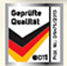

Побутова техніка та споживча електроніка
Адже ви любите свій дім
Побутова техніка та споживча електроніка
Адже ви любите свій дім
Побутова техніка та споживча електроніка
Адже ви любите свій дім
Побутова техніка та споживча електроніка
Адже ви любите свій дім
ВИ ЗАВЖДИ БУДЕТЕ ВПЕВНЕНІ У ЯКОСТІ!
- Ваги кухонні
- Чайники електричні
- Плитки електричні
- Печі електричні
- Мультиварки
- Печі мікрохвильові
- М'ясорубки
- Ваги кухонні
- Чайники електричні
- Плитки електричні
- Печі електричні
- Мультиварки
- Печі мікрохвильові
- М'ясорубки
- Ваги кухонні
- Чайники електричні
- Плитки електричні
- Печі електричні
- Мультиварки
- Печі мікрохвильові
- М'ясорубки
- Ваги кухонні
- Чайники електричні
- Плитки електричні
- Печі електричні
- Мультиварки
- Печі мікрохвильові
- М'ясорубки
В основі техніки HausMark –
унікальні європейські технічні розробки,патенти та ліцензії, висококласний
інжиніринг , а також якісний італійський і німецький дизайн.
Покупці обирають
Блендерний набір
HBS-855BL/LED
- Потужність — 850 Вт.
- Кількість режимів — 2.
- Регулювання обертів — так.
- Аксесуари: вінчик, подрібнювач 500 мл,
пластиковий стакан 600 мл, слайсер 1250 мл
з 4-ма терками, насадка для приготування - LED підсвічення.

Праска HausMark
SI2141CSP
- Потужність: 2000–2200 Вт.
- Підошва — керамічна
- Ємність резервуару — 400 мл.
- «Анти-крапля».
- «Анти-накип».
- Прорезинена ручка, кнопки, основа.
М`ясорубка
MG-630R
- Потужністю 3000 Вт.
- Реверс, насадка для сосисок і Кеббе.
- Три решітки (отвори 3/4 / 8.8 мм).
- LED індикація роботи.
- Захист від блокування двигуна.
- Відсік для зберігання аксесуарів.
- Металеве з'єднання приводу з шнеком.